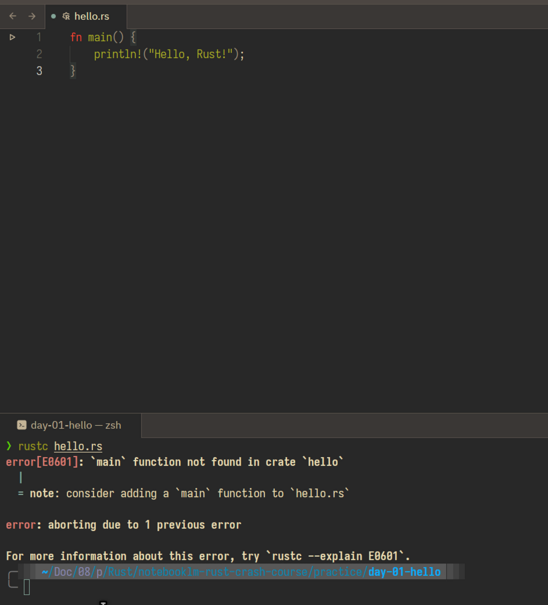
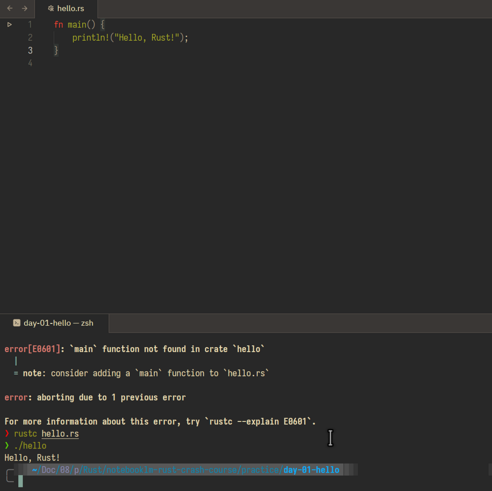

Rust Crash Course · Day 1 · Source 03
Make a Rust program exist.
Today you will write one tiny program, compile it into a binary, and run that binary. That loop is the foundation for every later Rust lesson.
What you are learning
Your downloaded chapter introduces Rust as a compiled, statically typed language. For today, keep one distinction in view: your source file is for humans; the compiled binary is what your operating system runs.
Course source: Tech With Tim’s Rust Programming Tutorial playlist (Tutorial #1: Introduction To Rust Programming). Optional extra: the official Getting Started chapter of The Rust Programming Language if you want more detail after completing today’s practice.
Hold this model
hello.rsReadable Rust sourcerustcCompilerhelloNative binaryKeep the compile-cycle reference nearby. A normal build produces a binary for its target platform; it is not automatically a universal file for every operating system.
Zed Lab · use this every day
Connect your Rust practice to Zed
- Open your Rust practice folder in Zed with File → Open.
- Press Ctrl + ` to open the integrated terminal at the bottom.
- Run
pwd, then update the Rust toolchain once:
rustup update
rustc --version
cargo --version- Your editor and terminal now work in the same folder with an up-to-date Rust toolchain.
rustup update updates installed Rust toolchains. Run it now, and occasionally later—not before every lesson. Zed’s terminal uses your system shell and normally starts in the folder you opened. If Rust works in an external terminal but not in Zed, open the same folder from that working shell with zed .; Zed will inherit its environment. For every daily lesson, use this same loop: open the practice folder → read the next downloaded chapter → change code → save → run the listed command in Zed’s terminal → inspect the result.
Do this now
Build “Hello, Rust!”
- In Zed’s integrated terminal, create a dedicated Day 1 practice folder and the Rust source file:
mkdir -p practice/day-01-hello
cd practice/day-01-hello
touch hello.rs
zed .touch hello.rs creates an empty file. zed . opens this exact folder as a Zed project; select hello.rs in the file panel, then paste the code below. If the zed command is not available, use File → Open in Zed and choose the practice/day-01-hello folder instead.
- Confirm the toolchain from that same Zed terminal:
rustc --version- Put this code into
hello.rs, then save it:
fn main() {
println!("Hello, Rust!");
}- Compile it from Zed’s terminal:
rustc hello.rs- Run the newly created binary:
# Linux / macOS
./hello
# Windows PowerShell
.\hello.exeYou should see Hello, Rust!. If rustc is missing, pause here and use the official installation instructions linked above; do not try to patch around a missing toolchain.
Common rookie mistake · caught and fixed
“But I can see main in Zed!”
The compiler only reads the version of hello.rs saved on disk. An editor can show newer text that is still only in its unsaved buffer. That is why the first compile reported main function not found: the saved file was empty or older.
- Write or change the code in Zed.
- Save with
Ctrl+S. - Run
rustc hello.rsagain in Zed’s terminal. - Run
./hello.
This is not a Rust syntax problem; it is the normal edit → save → compile loop. Your Day 1 screenshots show both sides of the loop:

main is visible in Zed, but Rust still sees the previous on-disk file.
Ctrl+S: compile again, then run the binary successfully.Tooling clarification · extra context
rustc or Cargo?
rustc is the compiler itself. Today’s standalone hello.rs uses rustc hello.rs, which produces a binary in the same folder. Use this path today because it makes the compile cycle visible.
Cargo is Rust’s project manager and build tool. Inside a folder that contains Cargo.toml, cargo run invokes the compiler, then runs the result. Cargo also manages dependencies, standard project folders, testing, formatting, and the target/ build directory.
rustc hello.rs. A real project with Cargo.toml → cargo run. Day 2 will make the Cargo workflow concrete.Python bridge · optional mental model
Is Cargo like uv?
Yes, partly. Cargo is closest to uv in project mode: it knows the project, reads its dependency manifest, keeps a lockfile, builds what is needed, and runs the project. But Cargo is not a Python virtual-environment manager.
uv initCreate a projectcargo newCreate a Cargo projectpyproject.tomlProject metadata and declared dependenciesCargo.tomlProject metadata and declared dependenciesuv.lockExact resolved dependency versionsCargo.lockExact resolved dependency versionsuv run …Run a command in the project’s environmentcargo runBuild then run the project’s binaryThe important difference: no Rust .venv
uv venv creates an isolated Python environment containing installed packages, which you may activate. Cargo does not create or activate an equivalent environment. It reads Cargo.toml, resolves the crates, compiles them for the project, and writes compiled artefacts to target/. Think of target/ as build output—not as a Rust .venv.
The closest Rust companion to uv python install is rustup toolchain install stable: rustup manages Rust toolchains, while Cargo manages each Rust project.
For Day 1: keep using rustc hello.rs so you see compilation directly. Once we create a real package in the downloaded course sequence, switch to Cargo and use cargo run in Zed’s terminal.
Read the three moving parts
fn main() {
println!("Hello, Rust!");
}fn main()declares the entry-point function—where the executable begins.println!writes a line to standard output. The!tells you this is a macro invocation, not an ordinary function call."Hello, Rust!"is a string literal: text written directly in source code.
A tiny macro preview — we will return to this later
A function is like a little machine you give a value to while the program runs. A macro is like a helper that helps Rust build the instructions before the program runs. The println! macro can understand several patterns—plain text, text with a number, or named values—and generate the right printing code.
println!("Hello!");
println!("Score: {}", 10);
println!("{name} has {count} apples", name = "Sam", count = 3);Python has no direct Rust-style macro system; Python functions and *args often handle flexible inputs at runtime instead. You do not need to master macros today: just remember that the ! is meaningful, then keep using println! exactly as written.
Retrieval check
No peeking: what does rustc hello.rs produce?
Finish line
Before tomorrow
Reply to me with: the output you got and one sentence answering “what is the difference between hello.rs and hello?” I’ll use that to calibrate Day 2: Rust tools and Cargo.